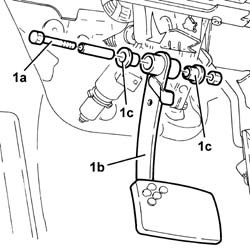
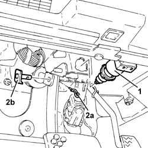

3330B24 brake pedal - r r for versions with manual gearbox with hydraulic selection
- Path
- Procedures > 33 BRAKING SYSTEM > 3330 HYDRAULIC BRAKING SYSTEM > 3330B pedal unit > 3330B24 brake pedal - r r for versions with manual gearbox with hydraulic selection
- Kind
- repair procedure (removal / refitting; the operation number is the code)
- Applies to
- all engines; all production periods
- Interactive page
- https://sloeber94.github.io/elrnDB-a156/en/#/3238062
Applies to: engines: 3.2 V6; all production periods; only with equipment: Smart gearbox
 Removing
Removing
 Refitting
Refitting1. Rotate the stop lights switch and release it from its mounting bracket.
2. Withdraw the split pin (2a) and withdraw the pin (2b) connecting the brake pedal to the brake servo.

Applies to: engines: 3.2 V6; all production periods; only with equipment: Smart gearbox
1. Undo the bolt (1a) and remove the brake pedal (1b) complete with bushes (1c).

Applies to: engines: 3.2 V6; all production periods; only with equipment: Smart gearbox
Refitting
RemovingFit the brake pedal complete with bushes and fix it to the pedal assembly, tightening the bolt to the recommended torque.
 | Fastening | Component | Ø | Value (daNm) |
|---|---|---|---|---|
- | Bolt | BRAKE PEDAL | M8 | 3.2 |
Fit the pin connecting the brake pedal to the brake servo and secure it with its split pin.
Replace the stop lights switch in its seat.
Applies to: all engines; all production periods; only with equipment: Smart gearbox
Removing
Refitting1. Rotate the stop lights switch and release it from its mounting bracket.
2. Withdraw the split pin (2a) and withdraw the pin (2b) connecting the brake pedal to the brake servo.

Applies to: all engines; all production periods; only with equipment: Smart gearbox
1. Undo the bolt (1a) and remove the brake pedal (1b) complete with bushes (1c).
Applies to: all engines; all production periods; only with equipment: Smart gearbox
Refitting
RemovingFit the brake pedal complete with bushes and fix it to the pedal assembly, tightening the bolt to the recommended torque.
| Fastening | Component | Ø | Value (daNm) |
|---|---|---|---|---|
- | Bolt | BRAKE PEDAL | M8 | 3.2 |
Fit the pin connecting the brake pedal to the brake servo and secure it with its split pin.
Replace the stop lights switch in its seat.